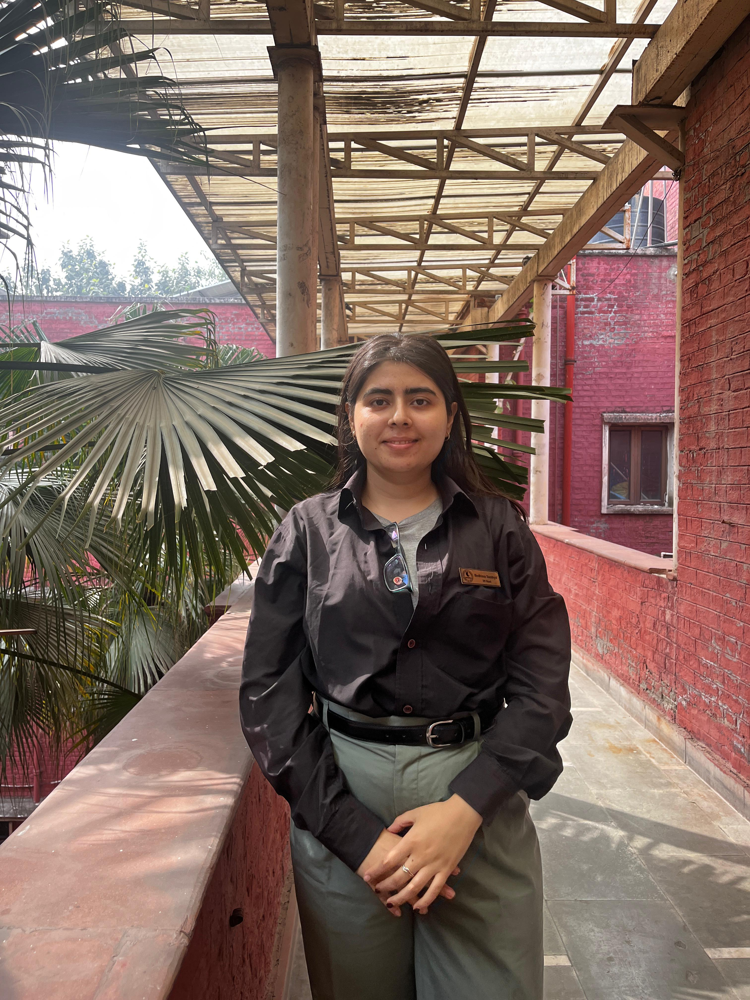

Redhima
DOB:-18/04/2004
ABOUT ME
As a passionate individual with a strong aptitude for teamwork, I excel in collaborative environments where collective efforts drive success. My arsenal includes a robust set of soft skills, which enable me to navigate diverse situations with ease and foster meaningful connections with colleagues and stakeholders alike. With decent communication skills at my disposal, I effectively convey ideas and contribute to productive dialogue within teams. Eager to expand my horizons, I approach each opportunity as a chance to learn and grow, embodying the spirit of an enthusiastic explorer in both my personal and professional pursuits
🌿 Volunteer Work & Social Engagement
I’ve always been keen on learning more, exploring more, and volunteering more. As you go through my profile, you’ll see how I’ve been an active person who loves to contribute to different causes.
- Photography and videography for social events
- Plantation drives
- Self-defence and education drives
- Sexual awareness sessions for slum children
- Activity and engagement programs with underprivileged children
- Blood donation camps
- Stray dog vaccination and collar drives
- Food distribution for stray animals
- Visits to private NGO dog centres
📸 Photography & Social Media Work
Being passionate about photography and skilled in camera work and editing, I’ve actively contributed as a Social Media Head and Member for PawScouts and BioCensose.
I have created engaging content, including event reels and post-event highlights, which successfully achieved over 100K views within 2–3 weeks on Instagram, increasing engagement for pages with around 500 followers.
For the PawScouts Dog Club, I handled photography and content creation, showcasing our drives, visits, and awareness campaigns through social media.
🏛️ Cultural & NGO Involvement
As an active volunteer with SPIC MACAY (KMC Chapter), I’ve participated in Cultural and Heritage Walks to promote Indian culture among youth.
I’m also an event member of NGO Arambh, contributing to education and awareness drives, and co-organized a successful fundraising event — Suramaya’24 — with my team.
Additionally, as part of my Department Society, I’ve coordinated and managed several successful events, including Ecdysis’24 and Ecdysis’25.
Hard Skills
- Lab Techniques · Microscopy · Sample Preparation · Dissection · Gel Electrophoresis · DNA Isolation · Data Recording · Biosafety
- Field Research · Biodiversity Assessment · Ecological Surveying · Data Observation · Environmental Awareness.Participated in field trips and ecological data collection
- Gained hands-on experience in biological research, lab experimentation, field surveys, and scientific analysis. Developed a strong foundation in zoological concepts, analytical thinking, and scientific communication through academic projects and practical training.
- Conducted biodiversity surveys and ecological sampling
- Studied animal behavior and environmental adaptations
- Workshop Participant
- Blending event management, community outreach, and social media communication in my own way , I bring strong leadership, creativity, collaboration, and digital engagement skills developed through 8+ years of experience in college societies and NGOs.
- Participated in field trips and ecological data collection
Soft Skills
- Leadership & Team Management
- Communication
- Public Speaking
- Team Collaboration
- Problem-Solving
- Time Management
- Creativity & Innovation
- Creativity & Innovation
- Adaptability
- Empathy & Social Awareness
- Stakeholder Coordination
- Decision-Making
- Community Sensitivity
- Responsibility & Accountability